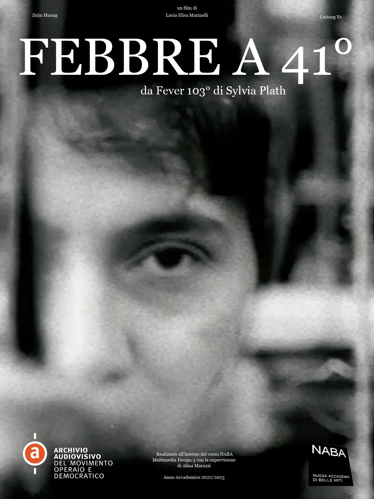
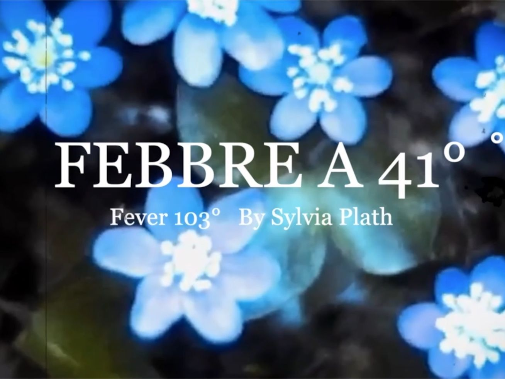
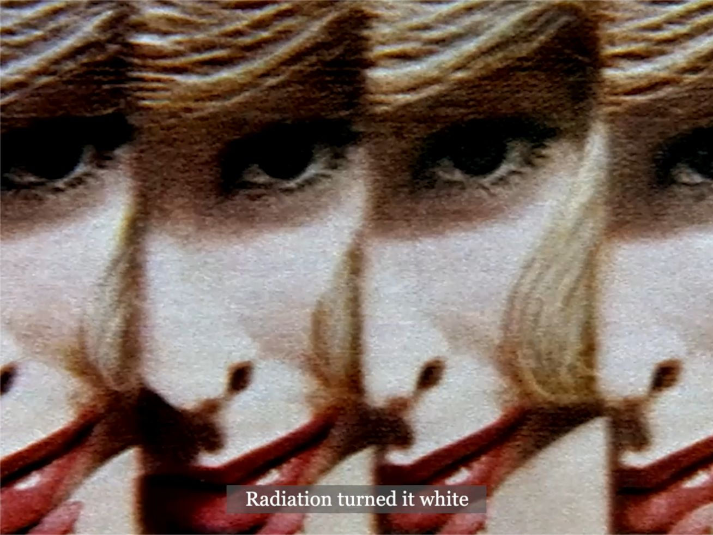
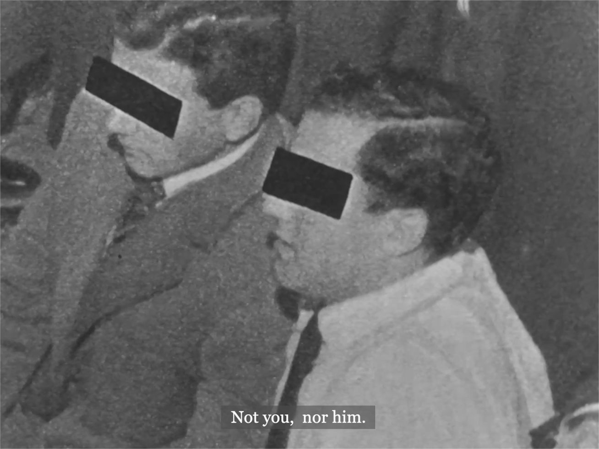
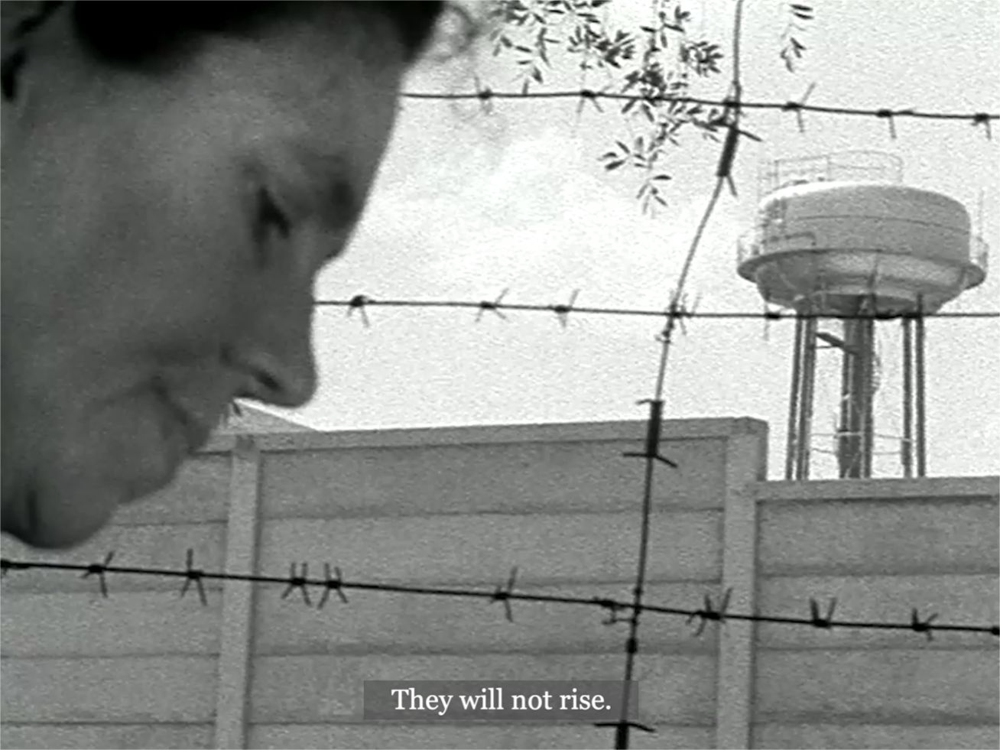
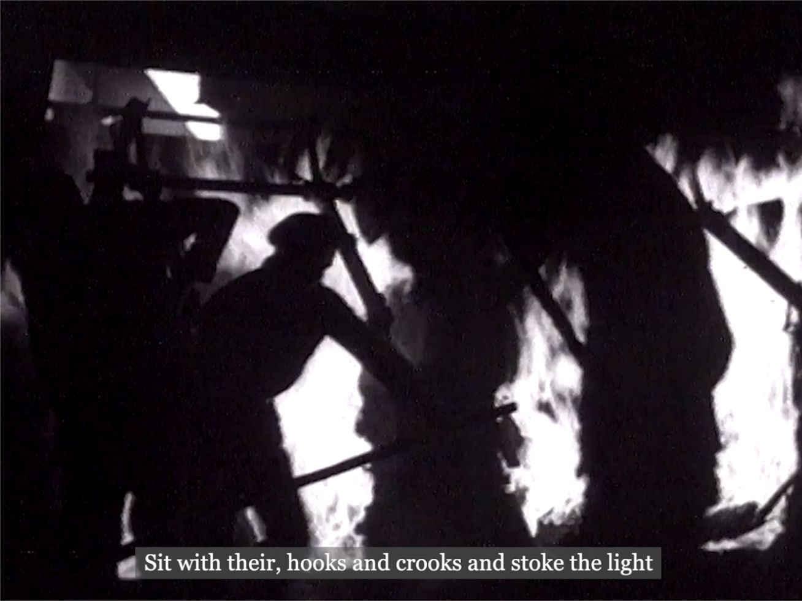
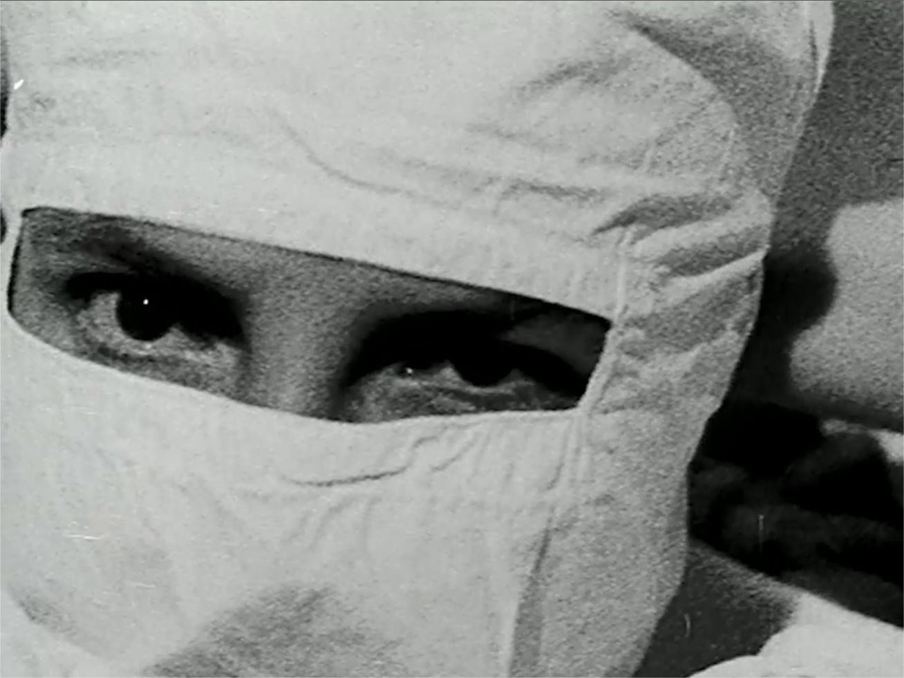
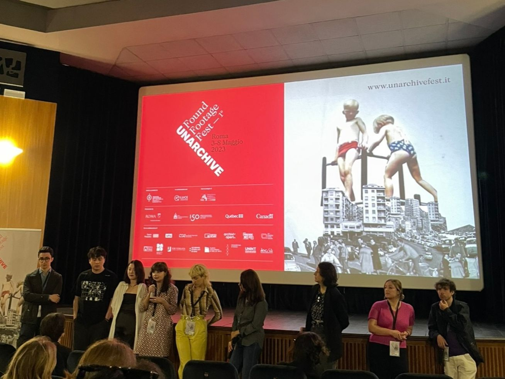
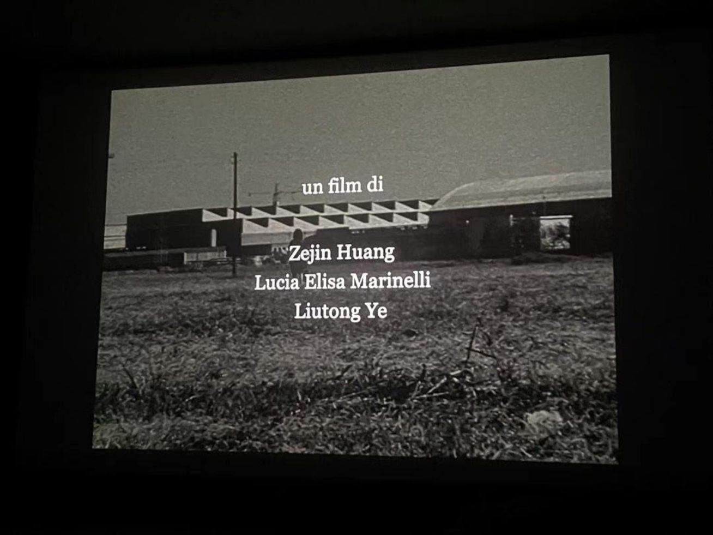

Febbre a 41°
A found-footage short film reflecting on the condition of women through archival images and Sylvia Plath’s poetry.

Febbre a 41° is a short film created with archival materials from AAMOD and the Internet Archive. Inspired by Sylvia Plath’s poem Fever 103°, the film uses the poet’s words as a starting point to reflect on the condition of women.
The images are drawn mainly from the AAMOD archive and portray the feminist movements and social struggles of the 1970s. Through montage, the film connects poetic language with historical footage, creating a dialogue between personal fever, collective resistance and female experience.
The short film was presented at the UnArchive Found Footage Festival and at PLAI, the exhibition-playground of NABA (Nuova Accademia di Belle Arti, Milan).







